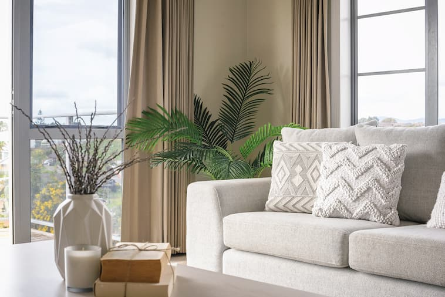

Maison
Maison de plage au Touquet
4.89
(128)
Le Touquet-Paris-Plage
Cette chambre ensoleillé et spacieuse est destinée à ceux qui voyagent léger et recherchent un endroit confortable et douillet pour se reposer pendant une nuit ou deux. Cette maison de plage se trouve dans un quartier animé parsemé de cafés, pubs, restaurants et supermarchés et se trouve à proximité de toutes les principales attractions telles que la plage.

